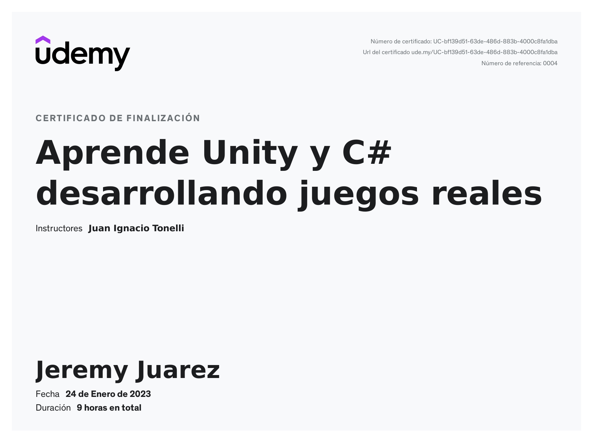
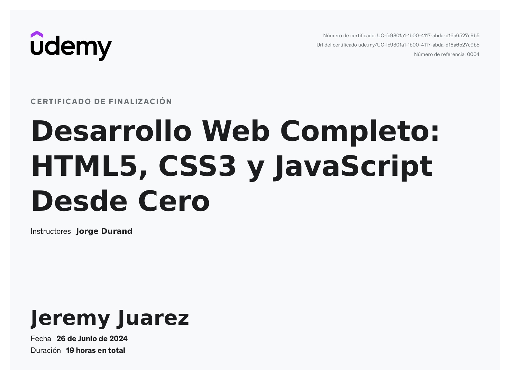
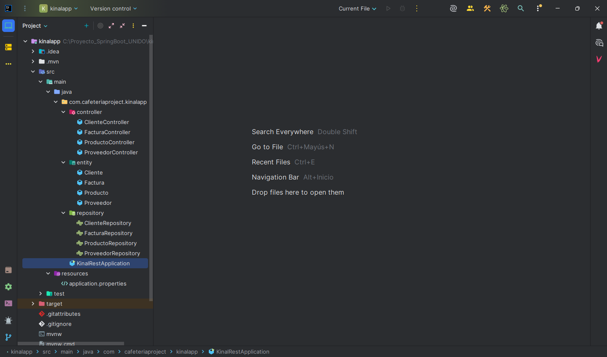
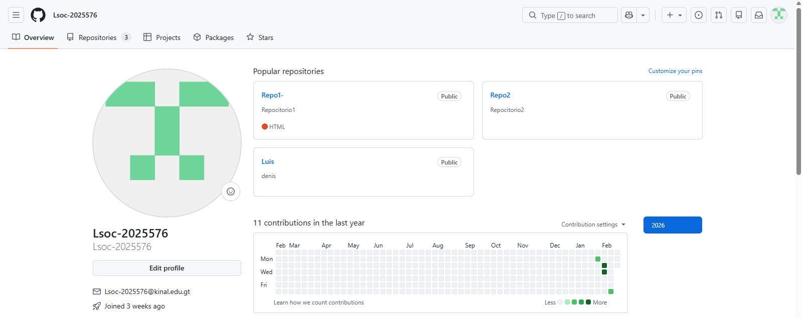
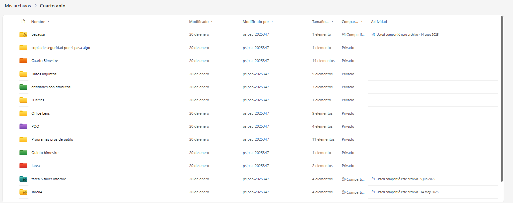

<<<<<<< HEAD
About Me - Scrum
=======
About Me - Scrum
Jeremy Juarez - About Me
Hola! soy Jeremy Juarez, un joven apasionado por la tecnologia y el desarrollo de software
a la corta edad de 8 años comencé en este mundo precisamente con HTML y CSS, y ha ido
escalando con el tiempo a aprender tecnologias como C# o Java. Espero en un futuro poder
dedicarme a esto y seguir aprendiendo cada día más!
Certificados:


Denis Tuquer - About Me
Bienvenidos a mi mundo. Mi nombre es Denis Ottoniel Tuquer Vásquez. Hace dos años me llamó la
atención el mundo de la tecnología, y hace un año ingresé a Fundación Kinal. Ha sido una experiencia
muy impresionante, ya que cuenta con tecnología avanzada y un excelente nivel educativo.
Estoy seguro de que en Fundación Kinal saldré muy bien preparado, porque cada día se aprenden
nuevas tecnologías y se desarrollan habilidades importantes para el futuro. Mi objetivo es seguir
aprendiendo, mejorar mis conocimientos y convertirme en un profesional exitoso en el área
tecnológica.
Apendriendo:

Luis Armando Soc Tun - Un Poco De Mi
Estoy empezando en el mundo de la programación y me encanta descubrir cómo funciona el código.
Cada proyecto pequeño es una oportunidad para aprender algo nuevo y seguir creciendo.
Me emociona experimentar con diferentes lenguajes y tecnologías,
y espero poder crear proyectos propios que reflejen lo que voy aprendiendo.
Mis Proyectos

Pablo Sipac - Sobre mi
Saludos, Mi nombre es pablo esteban me gustaria terminar mi carrera y tener un trabajo relacionado con la informatica
Cada dia trato de esforzarme para salir adelante y poder ayudar a mi familia con los gastos. Algun dia tendre mi setup
completo y tendre mi estabilidad al final de mi vida.
Trabajos hechos:

Justin Sandoval - About Me
Hola, soy Justin Sandoval, tengo 17 años y a la edad de 10 años empecé a interesarme en el mundo de la informática . Empecé viendo tutoriales informativos sobre componentes de mi PC , leyendo manuales, etc. Ahí fui escalando poco a poco al nivel de ser capaz de desarrollar una lógica de programación relativamente decente, a pesar de no ser muy bueno en lo que hago, me sigo esforzando para cada día ser mejor en lo que me apasiona.